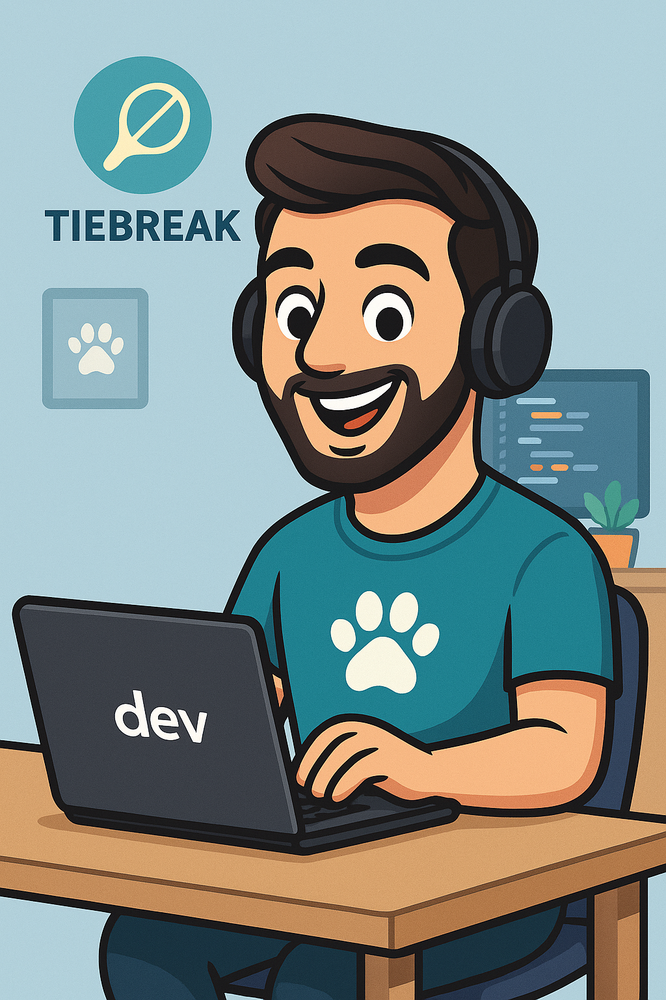

Sobre mí
Soy Jose Ignacio Bayón, desarrollador de webs y apps móviles especializado en Flutter y React. Me apasiona crear aplicaciones tanto web como móviles que sean útiles y atractivas visualmente.
Trabajo con tecnologias como React, CSS, JavaScript, Vite, Flutter, Dart, Swift y SwiftUI, Firebase y Node.js para la parte del backend.
Tengo en desarrollo DogShare, una red social pensada para conectar a dueños de perros, compartir
ubicaciones pet-friendly, eventos y mucho más.
Es un proyecto personal que une dos cosas que me encantan: programar y los perros 🐶
En mi tiempo libre, disfruto explorando nuevas tendencias en desarrollo web y móvil, y me gusta aplicarlas en mis propios proyectos.
También juego al pádel —que nunca está de más para desconectar— y soy profesor de este
deporte. 🎾.
En un futuro, tengo la idea de crar una app para gestionar clases de pádel, donde los alumnos
puedan reservar horarios y ver sus estadísticas de juego.